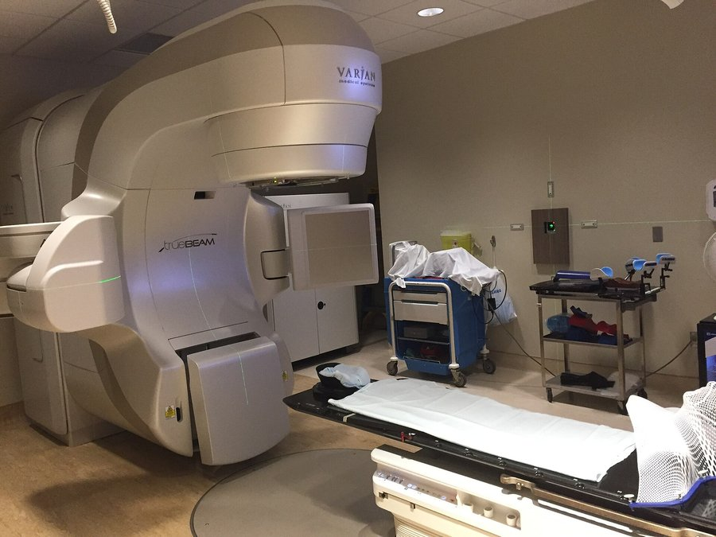

العلاج الإشعاعي
Linear accelerator (LINAC) يسرّع الإلكترونات بموجات ميكروية ثم يصدمها بهدف معدني فتخرج أشعة سينية عالية الطاقة (MV).
الأشعة تُتلف DNA الخلايا السرطانية فتموت، والخلايا السليمة تُصلح نفسها أفضل.
حماية النسيج السليم: حِزَم من زوايا متعددة تلتقي عند الورم، وMLC (المحدِّد متعدد الشرائح) يشكّل الحزمة بشكل الورم.
Fractionation: الجرعة تُقسَّم إلى جلسات يومية صغيرة لتعطي السليم وقتاً للتعافي.
